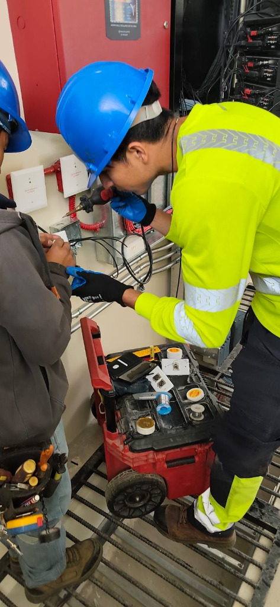

Engineering
portfolio
Proyectos de Automatización,
Control Industrial, SCADA e I+D

Con una base consolidada en electrónica, robótica, control automático e industrial, modelado CAD 3D y 2D, programación y gestión de proyectos he liderado soluciones de ingeniería que demuestran rigor técnico, creatividad y confiabilidad operativa.
¡Hola! Mi
nombre es
Ariel Sebastián Parra Pérez.

Mi objetivo es desarrollar mis pasantías preprofesionales y mi Trabajo de Titulación (Tesis) en un entorno industrial, colaborando con equipos multidisciplinarios para implementar mejoras continuas y soluciones medibles en sistemas de automatización, SCADA o retrofitting.
Estudiante de 7.º Semestre (Beca 100% Excelencia UDLA y 2x Mejor Promedio) enfocado en resolver cuellos de botella en planta.
Profesionales &
Distinciones
Organización: Universidad de Las Américas (UDLA) | Fecha: Julio 2024
Control discreto, automatización de secuencias e integración industrial.
Organización: Certificación Técnica / Arduino | Fecha: Feb – Ago 2025
Modelado paramétrico 2D/3D, ensamblajes mecánicos y sistemas embebidos.
Organización: Cisco Networking Academy & Coursera | Fecha: Jul – Sep 2024
Visión artificial (Machine Learning), automatización por APIs y datos.
Skills

- Diseñé y validé prototipos de drones (UAVs) para la Fuerza Aérea, resolviendo retos de sustentación y eficiencia energética en altura para sostener operaciones de 30 minutos con 2 kg de carga útil.
- Ejecuté pruebas funcionales, instrumentación electrónica y validación de prototipos bajo estándares de alta confiabilidad.
- Documenté arquitecturas de hardware y protocolos de prueba, reduciendo tiempos de iteración e integración técnica.
Professional
Experience
Esta sección presenta mi experiencia práctica en investigación aeroespacial, proyectos industriales en campo y liderazgo de laboratorios de ingeniería.


- ⇾ tableros de fuerza/control
- ⇾ protecciones eléctricas
- ⇾ reducción de MTTR
- ⇾ cableado estructurado

- ⇾ robótica y código
- ⇾ piezas 3D en CAD
- ⇾ ergonomía técnica
- ⇾ guías de laboratorio

Cada plano cumple estándares industriales de seguridad y selectividad.
Technical
Drawings &
Schematics
Cada diseño demuestra mi capacidad para entregar planos As-Built precisos y listos para planta bajo normativa eléctrica y mejores prácticas.

Fuerza y Control Diagramas de Flujo
& Red SCADA
de Componentes
Visualización CAD


Mis proyectos integran control automático, electrónica de potencia, visión artificial y telemetría LoRa para elevar la eficiencia operativa y reducir tiempos de paro.
Busco desarrollar mi Tesis de Ingeniería dentro de su planta industrial sin costo de honorarios de consultoría.
Cada prototipo fue validado con modelado CAD 3D, simulación en TIA Portal / CADe-SIMU / MATLAB y pruebas físicas con PLCs Siemens/Schneider, obteniendo el 2.º y 3.er Lugar en el concurso universitario Ingennials (UDLA).
Project
Summary ⇢
Incrementar el OEE, la confiabilidad eléctrica y la trazabilidad de datos de una línea industrial existente para reducir merma y consumo energético.

- ⇢ Clasificador con Visión Artificial (ML)
- ⇢ Red de Potencia Dimerizable LoRa
- ⇢ Tableros de Fuerza y Control Industrial
- ⇢ Monitoreo IIoT, Hexápodo & VICTUS IA
Diseño de un sistema electrónico de regulación lumínica automática utilizando microcontroladores ESP32, etapas de potencia AC/AC y comunicación LoRa.
PLANO AUTOCAD DE ILUMINACIÓN
Aplicable a naves industriales y parques para ahorro energético automático sin cableado de control adicional.
SIMULACIÓN FOTOMÉTRICA 3D
PROTOTIPO ESP32 + ZCD + CONVERTIDOR AC/AC
Ariel Parra